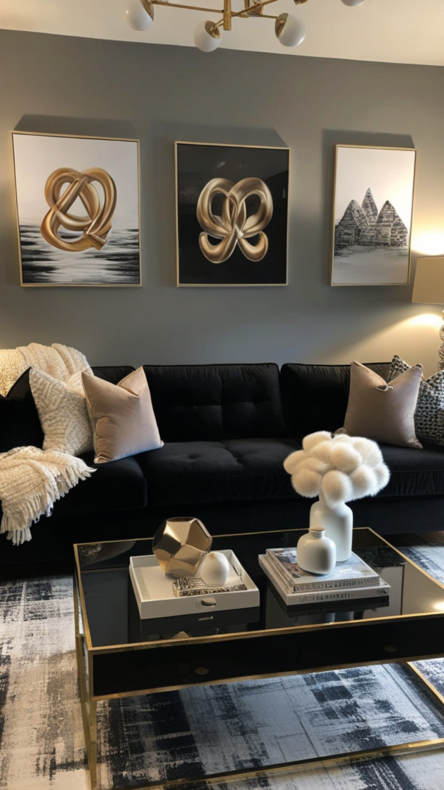
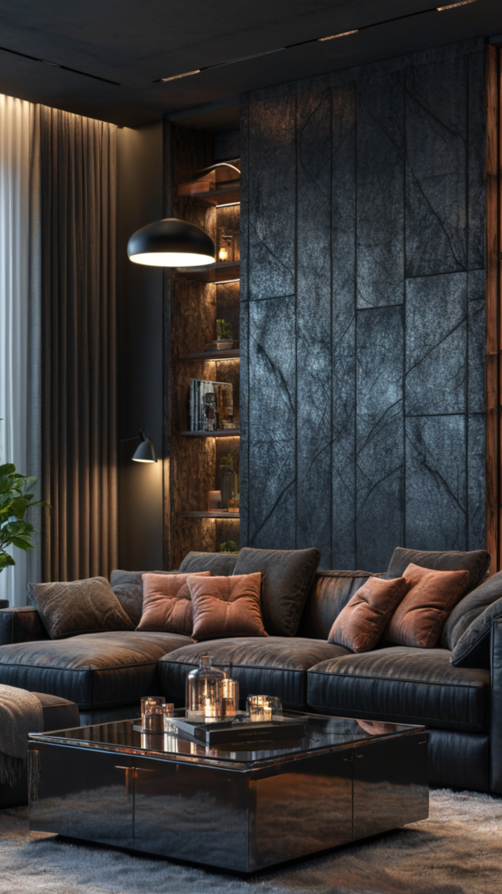
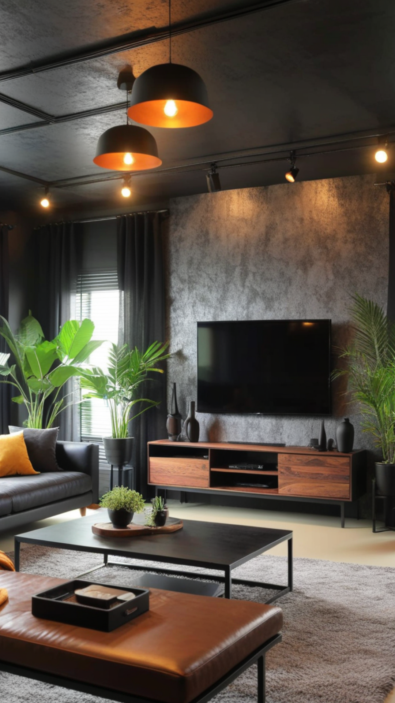
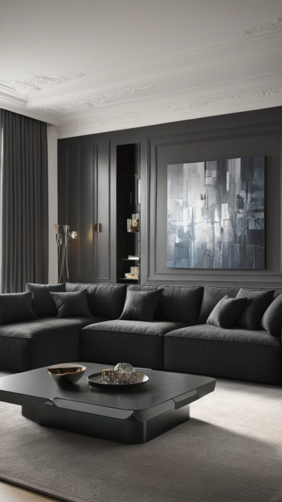

Black Living Room Decor: Timeless Elegance for a Stylish Home
Black living room decor has become a popular trend among interior design enthusiasts who appreciate sophistication and modernity. Whether you're looking to create a bold, dramatic space or a sleek, minimalist aesthetic, black offers endless design possibilities. In this article, we'll explore innovative ways to incorporate black into your living room, ensuring a chic and inviting atmosphere.
1. The Power of Black in Interior Design
Black is a versatile color that exudes elegance, depth, and mystery. It serves as an excellent base or accent color in any living space. When used strategically, black can make a room feel cozy, intimate, and luxurious.
2. Choosing the Right Black Shade
Not all blacks are the same. Matte black creates a soft, sophisticated look, while glossy black adds a sense of drama and reflection. Charcoal and deep graphite shades offer a muted, more understated appeal. Consider the natural lighting in your living room before choosing the perfect black shade.
3. Balancing Black with Complementary Colors
To prevent a black living room from feeling too dark or overwhelming, pair it with complementary colors such as:
- White: Creates a striking contrast and a clean, modern look.
- Gold or Brass: Adds warmth and a touch of luxury.
- Gray: Enhances depth while maintaining a neutral balance.
- Earth Tones: Softens the boldness of black with natural elements.
4. Furniture Choices for a Black Living Room
Selecting the right furniture is crucial for maintaining harmony within a black-themed space. Opt for plush velvet sofas in deep black for a luxurious feel or sleek leather chairs for a contemporary edge. Consider wooden coffee tables or metallic accents to add texture and contrast.
5. Wall Treatments and Textures
Experimenting with wall treatments can elevate your black living room decor. Options include:
- Black accent walls with textured wallpaper or paint.
- Dark wood paneling for a warm and inviting feel.
- Exposed brick walls painted in black for an industrial-chic vibe.
- Statement artwork or mirrors to break up the darkness and add visual interest.
6. Lighting Techniques to Enhance Black Decor
Lighting plays a crucial role in ensuring that a black living room doesn’t feel too dim. Use a combination of:
- Layered lighting (overhead chandeliers, floor lamps, and table lamps) to brighten the space.
- Warm LED lighting to add a cozy ambiance.
- Wall sconces or pendant lights to highlight focal points.
7. Accessorizing with Black Decor Elements
Accessories bring personality to your living room. Consider incorporating:
- Black and white patterned cushions for a monochromatic look.
- Metallic or glass coffee table decor to add brightness.
- Plush black rugs to enhance comfort and warmth.
- Indoor plants in sleek black pots to introduce a natural element.
8. Minimalist vs. Maximalist Black Decor
- Minimalist Approach: Stick to clean lines, uncluttered spaces, and a limited color palette.
- Maximalist Approach: Incorporate rich textures, bold patterns, and layered decor elements for an opulent feel.
Final Thoughts
Black living room decor is a timeless choice that offers sophistication and versatility. By balancing textures, lighting, and complementary colors, you can create a space that feels both stylish and inviting. Whether you prefer a modern, industrial, or classic design, black will always be a bold yet elegant statement in any living space.
Embrace the beauty of black living room decor and transform your home into a sanctuary of style and comfort.
   